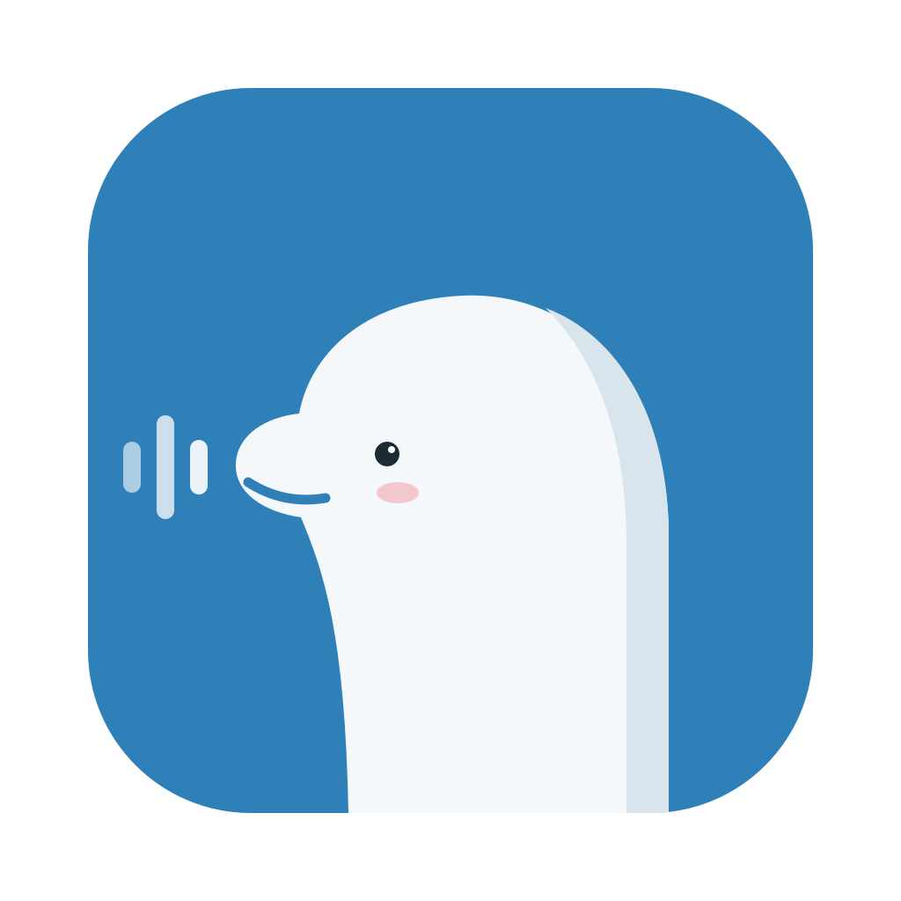

Beluga Appearance board
Stage 2 design board for Phase 5. Every "today" value comes from the code: indicator card 200x36, corner radius 24, dot 8 pt, 13 pt semibold text; window width 450; ThemePalette colors for panels and cards. Dashed outline marks what ships today. Blur and material rendering is an HTML approximation of SwiftUI's thinMaterial, so judge hue and proportion, not exact blur.
0. Today
Your screenshots, unedited. Everything below must reduce to these with fresh prefs.

1. Recording indicator
Color replaces the red dot only
Orange is dropped because it already means busy, no microphone and cancel. Red keeps today's gradient and glow. A custom picker sits after the presets. Spinner, text and orange warning states do not change.
Size scales card, text and panel together; applies on next show
Background style
Default is today's look. Solid is the window color at 90%. Translucent drops the tint and uses a stronger blur. Shown over a busy backdrop in both appearances.
2. Accent color
Applied with .tint(...) at the root of the main window and the settings sheet. Presets: System (today), Beluga blue #2F7FB8, green, purple, pink, plus a custom picker. In the mockups the main-window record button and the "Show more" link are wired to the accent on purpose (they are hardcoded blues today); onboarding is not touched.
Ignores tint, stays as today: recording red (record button while recording, indicator), orange warnings, onboarding (Color.blue and its accent highlights), the yellow search highlight, system-drawn selection color in text fields (follows macOS accent, not the app tint).
3. Main window background
Only the window background layer changes (ThemePalette.windowBackground, ContentView line 625). Cards, search bar and rows keep today's panel surfaces, so in translucent mode you see exactly what shows through: the gaps and the dark-mode search bar (10% gray), while the opaque cards stay solid. Solid color example here is #1B2A33 (dark) and #E6EFF6 (light).
4. App icon
Rendered from beluga-icon.svg with the beluga clipped to the rounded square (the original body poked 1 to 2 px past the bottom-right corner). Transparent 100 px margin kept. Final file replaces AppIcon.icns; sizes below are the true pixel sizes.

5. Appearance settings tab
New segment after AI Cleanup (tag 6), text label, existing card style (padding 16, radius 12, controlBackground at 30%). The sheet is 680 wide and 500 tall today, so the tab scrolls; shown unclipped here. Accent and window controls also apply live to the sheet itself.